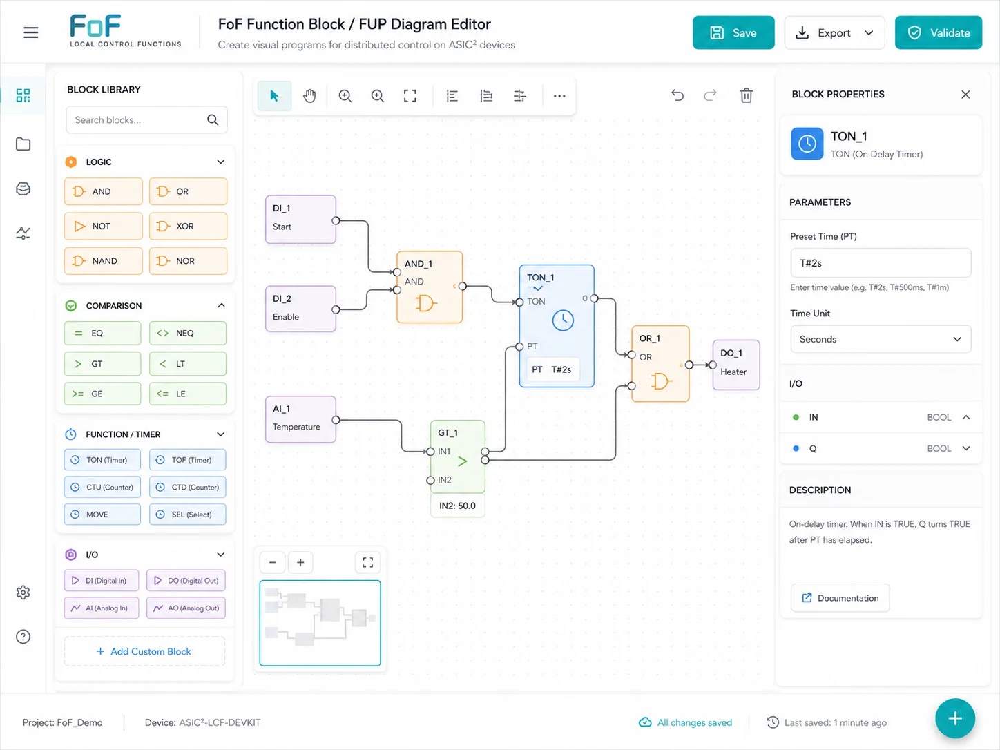
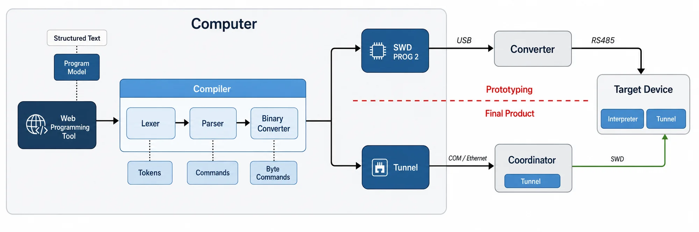

Factory of the Future
I led Eaton's Factory of the Future product program from factory discovery and roadmap definition through direct software implementation and pilot validation. The team created an industrial edge portfolio and proved the concepts on approximately 12 live machines across three production plants.
- Product roadmap
- OPC UA
- MQTT
- Physical I/O
- CODESYS
- Python
- Embedded C
- FreeRTOS
- Azure SQL
- MES integration
- Installation UX
- Factory pilots
01
Executive Summary
The program developed products that could connect existing machines to modern factory systems without requiring factories to replace working equipment.
It was a partially government funded collaboration between Eaton and the Czech Institute of Informatics, Robotics and Cybernetics at the Czech Technical University. I led five engineers and two interns across projects with budgets up to approximately $1.2 million. I led product direction, agile delivery, stakeholder alignment, and direct engineering. This meant I could carry a factory problem from discovery through product definition, implementation, and validation.
02
Product Direction
My first responsibility was to determine what factories actually needed. I visited technicians, factory directors, and workers, then translated their operating constraints into a product roadmap and feature set.
Study the market
Assessed technologies, competing approaches, customer needs, and profitability before committing engineering capacity.
Define the portfolio
Converted the findings into product concepts, feature priorities, roadmaps, and maturity targets.
Run the program
Led agile planning, set priorities, coordinated the team, and prepared funding and government documentation.
Align stakeholders
Brought proposals into discussions with product management, executives, sales, customers, and contributing departments. We agreed the final priorities together.
03
Edge Product Portfolio
The program was a portfolio, not a single gateway. Each product addressed a different part of the path from a physical machine to useful factory information and local control.
Gateway and data
Connect existing machines
Developed gateway and data collector concepts with digital and analog I/O, OPC UA, MQTT, HTTPS, Azure SQL, MES, and scheduling interfaces.
PLC connectivity
Publish reusable software
Developed the CODESYS MQTT client library in alignment with IEC 61131 and released it through the CODESYS Store.
Local control
Move logic toward the field
Created a distributed local control concept that could execute simple behavior within intelligent field I/O.
04
Hands on Engineering
I remained directly involved in the software and system architecture. For the embedded OPC UA gateway, I integrated an OPC Foundation SDK in C++ and worked with FreeRTOS execution. I also modeled machine states, physical I/O, protocol interfaces, and the flow of operational data toward factory applications.
The distributed Local Control Function, known internally as LCF, shows the depth of that work. I worked with Oxana Kovbasjuková on the function and led her initial internship at Eaton. I built a browser based function block programming application, a Python compiler that generated instructions for a stack machine, and an embedded C interpreter that executed the logic on the target.

A reconstruction of the browser based visual programming workflow. It contains no employer data or confidential factory information.

The browser produced a program model. The Python compiler tokenized, parsed, and converted it into byte commands. A loader transferred the program to an embedded C interpreter that executed a repeating input, logic, and output cycle.
05
Factory Validation
The pilots were not the final product. They were the validation method. We used real machines and real factory interfaces to test whether the portfolio solved the installation, connectivity, and information problems identified during discovery.
Connect machines
Retrofitted approximately 12 live machines with physical I/O connectivity and digital twins across three production plants.
Model useful state
Mapped cycle time, operating state, faults, performance, and utilization into consistent machine data.
Supply factory systems
Moved operational data through OPC UA, MQTT, HTTPS, and Azure SQL toward MES and scheduling systems.
Test installation
Used technician feedback to refine the setup concept and separate guided tasks from advanced administration.
06
Outcome and Evidence Boundary
The program produced a validated product direction, reusable software, one published library, and direct evidence from real factories.
Physical I/O and digital twin retrofits demonstrated the concepts with real factory equipment.
Pilots exposed actual installation, networking, workflow, and data quality constraints.
The MQTT client library reached the CODESYS Store; other components remained at different maturity levels.
The gateway was planned for production when I left. Data Collector and Local Control Function remained prototypes.